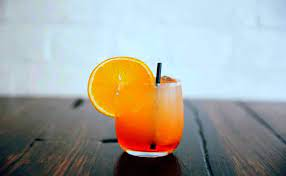

Sex On The Beach

Description
A Sex on the Beach is an alcoholic cocktail containing vodka,
peach schnapps, orange juice and cranberry juice.
It is an International Bartenders Association Official Cocktail.
Ingredients
- Ice
- 50ml vodka
- 25ml peach schnapps
- 2 oranges, juiced, plus 2 slices to garnish
- 50ml cranberry juice
- Glacé cherries, to garnish (optional)
Steps
- Fill two tall glasses with ice cubes.
- Pour the vodka, peach schnapps and fruit juices into a large jug and stir.
- Divide the mixture between the two glasses and stir gently to combine.
- Garnish with the cocktail cherries and orange slices.
Back to home